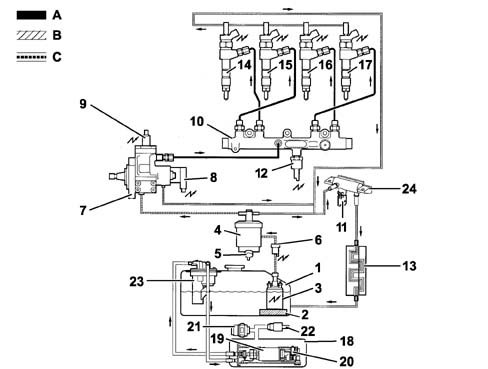
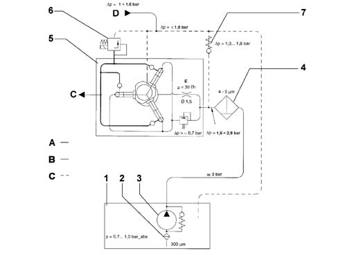

INTRODUCTION
- Path
- Descriptions > 10 ENGINE > 1040 FUEL TANK AND PIPES > INTRODUCTION
- Kind
- system description
- Applies to
- engines: 2.0 16V JTD, 2.2 16V JTD; all production periods
- Interactive page
- https://sloeber94.github.io/elrnDB-fUlss/en/#/179006593
Applies to: engines: 2.0 16V JTD, 2.2 16V JTD; all production periods
The fuel system is divided into a low pressure circuit and a high pressure circuit.
The low pressure circuit consists of:
- fuel tank;
- submerged (low pressure) electric fuel pump;
- fuel filter;
- electric fuel heater, fitted on the pipe upstream of the main filter;
- return pipes;
- an air/fuel heat exchanger, fitted on the return pipe from the common rail to the tank;
The high pressure circuit consists of:
- high pressure pump on which the pressure regulator is fitted;
- Pipes between pressure pump and common rail;
- common rail distribution manifold;
- Pipes between common rail and injectors;
- injectors.
The fuel supply system, as part of the FAP system, also includes an additional circuit which supplies a defined quantity of additive injected into the tank controlled by the NCM
Op. 1080B EXHAUST EMISSION CONTROL SYSTEM
Diagrammatic view of the fuel supply system

A, Low pressure circuit
B, High pressure circuit
C, Return circuit
1, Fuel tank | 13, Fuel cooling |
2, Pre-filter | 14, Injector |
3, Electric fuel pump (low pressure) | 15, Injector |
4, Fuel filter | 16, Injector |
5, Water bleed screw | 17, Injector |
6, Electric fuel heater | 18, Additive tank |
7, High pressure pump; | 19, Electric additive pump |
8, High pressure regulator | 20, Minimum additive level sensor |
9, High pressure pump 3rd cylinder exclusion devices | 21, Plug (too full) |
10, Common-rail | 22, Safety valve |
11, Fuel temperature sensor | 23, Additive injector |
12, Fuel pressure sensor | 24, Return manifold (low pressure) |
OPERATION
The (low pressure) submerged pump supplies the high pressure pump with fuel via an electric heater and the main filter.
The high pressure pump sends the fuel supplied at a variable pressure (between 200 and 1350 bar) to the common rail high pressure manifold.
The pressure in the common rail is kept constant by the pressure regulator fitted on the high pressure pump which is controlled by the NCM. The excess fuel returns, via the low pressure circuit, to the tank.
Diagram showing pressure in high and low pressure circuits

A, Low pressure circuits
B, High pressure circuit
C, Supply to the common rail
D, Supply to the injectors
E, Pump lubrication circuit
1, Fuel tank | 5, High pressure pump |
2, Fuel pre-filter | 6, Pressure regulator |
3, Submerged electric pump (low pressure) | 7, Low pressure regulator (incorporated in the fuel filter) |
4, Fuel filter |